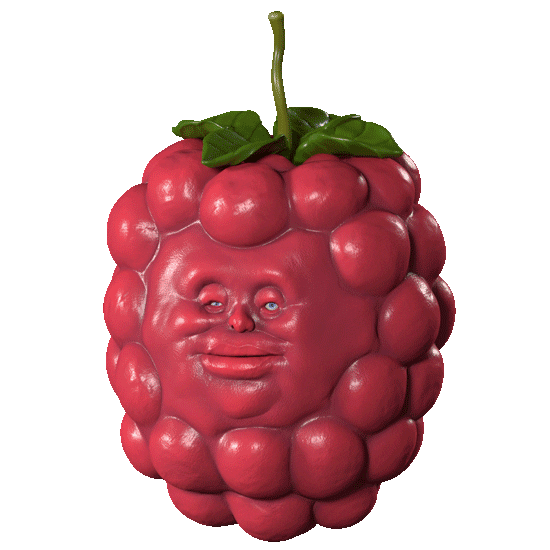

강민서는 2002년 2월 22일
2시경 2째로 태어났다.
강민서는 초등학교 2학년 때,
초등학교 기악경연대회에서
바이올린으로 2등상을 받았다.
강민서는 중학교 2학년 겨울방학때,
2명의 친한 친구들과 헤어지고,
2호선이 지나가는 뚝섬역 근처로
이사를 왔다.
강민서는 고등학교 2학년 때,
이름이 똑같은 친구와 매우 친해져
선생님들께 2(two)민서라고 불렸다.
이 친구의 이름은 2(이)민서이다.
강민서는 20살을 맞아,
친구와 2기숙사 앞 술집에서
소주를 2병씩 마셨다가 만취했다.
강민서는 22살 생일을 맞아,
2명의 동기와 수강신청을 하고
맛있는 밥을 먹었다. 이 2명
모두 수강신청을 망했다.
강민서는 수업 2일전 웹을
새벽2시 22분에 만들고 있다.
자취방에서 2분 거리에 있는
메가커피의 2천원짜리 아메리카노를
마시고 있다.
강민서는 삼사기실 22번 자리를
배정받아 강채연, 김주현 2명의
동기와 함께 야작하고 있다.
강민서의 ② 유니버스는
앞으로도 계속됩니다.
그럼 2만.
민서의 더 많은
2야기가 듣고 싶다면...
